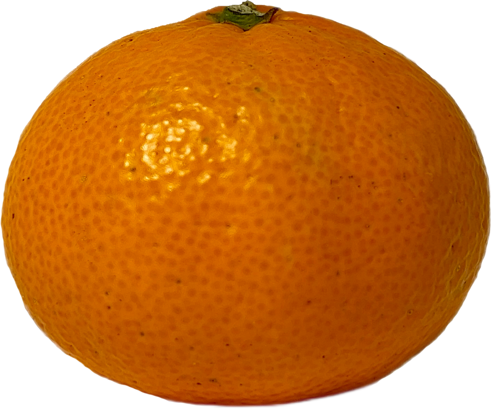

Как выбрать вкусные мандарины в магазине
На рынке покупать мандарины просто: попробовал — забрал те, что понравились. В магазине так сделать нельзя, поэтому приходится ориентироваться по внешнему виду. Но даже среди ярких, оранжевых плодов попадаются сухие и кислые. Я поговорила с экспертом и собрала советы, которые помогут выбрать вкусные мандарины в супермаркете.
Потрогайте
Спелый фрукт — мягкий, но упругий, с гладкой кожурой. Недозрелый мандарин плотный и будет таким, даже если полежит неделю дома. Перемороженные или подгнившие плоды рыхлые, поэтому на месте касания останется вмятина. Кожура мандарина должна плотно прилегать к мякоти: если между ними воздух — мандарин высох, и в нём будет мало сока.


Мягкий, как сочный помидор
Перемороженный или гнилой мандарин внутри мягкий. Дольки имеют бледный цвет и часто рвутся. Фрукт может быть безвкусным или кислым, с запахом брожения.
Твёрдый, как яблоко
Недозревший мандарин имеет плотную, жёсткую мякоть. Дольки твёрдые, с заметными белыми прожилками. Плод кислый, внутри мало сока, без запаха.
Упругий, как спелый персик
Спелый мандарин сочный и мягкий внутри. Дольки гладкие, легко отделяются друг от друга. Кисло-сладкий или сладкий вкус, с ярким цитрусовым запахом.
Слегка надавите на кожуру пальцем. Спелый фрукт будет мягким, но восстановит форму
Рассмотрите плод
Свежий мандарин имеет оранжевый или оранжево-красный цвет в зависимости от вида. Небольшие зелёные пятна допустимы, особенно у ранних сортов, например, «шива-микан». Кожура должна быть ровной и чистой, без трещин и сухих участков. Если плод выглядит слишком блестящим — его обработали воском, чтобы сохранить внешний вид. Воск не влияет на вкус, но перед едой мандарин нужно помыть.


Рубцы на кожуре мандарина появляются, когда плоды трутся друг об друга или из-за резких перепадов температуры. Рубцы не влияют на качество фрукта.
Коричневые точки — грибковая болезнь, меланоза. Болезнь не портит вкус мандарина и не опасна для человека.
Чёрные пятна на кожуре указывают на начало гниения. Фрукт будет водянистым, мягким и безвкусным. Такой мандарин лучше не есть.
Марина Кумерина, эксперт:
«Мандарины должны перевозить и хранить при температуре не ниже 2 °C, иначе они перемерзают и теряют вкус. Такие плоды будут с тусклой, коричневой кожурой»
Взвесьте в руке
Вес мандарина напрямую указывает на его сочность: сочный мандарин будет тяжёлым для своего размера, а лёгкий фрукт окажется сухим внутри.
Возьмите два мандарина одинакового размера и по очереди взвесьте их. Плод, который тяжелее, будет сочнее
Найдите любимый сорт
Насколько легко чистится мандарин и будут ли в нём косточки, визуально понять невозможно — это зависит от сорта. В мире существует 200 видов мандаринов, но в России продают только 10. Я сходила в ближайшие супермаркеты и купила три самых популярных сорта: оценила их вкус и проверила, как быстро они чистятся.

«Клементин», Марокко:
чистится за 25 секунд;
кожура плохо отделяется;
много мелких косточек;
кисло-сладкий, мало сока.

«Уншиу», Абхазия:
чистится за 17 секунд;
кожура легко отходит;
косточек не бывает;
сочный, с кислинкой.

«Муркотт», ЮАР:
чистится за 12 секунд;
кожура отходит сразу;
попадаются косточки;
сочная, сладкая мякоть.
Марина Кумерина, эксперт:
«Марокканские „клементины“ лучше покупать в ноябре — декабре, абхазские „уншиу“ — в декабре, сочные „муркотт“ из ЮАР — с декабря по февраль»
Чек-лист перед покупкой
Найдите свой любимый сорт. Как легко чистится кожура, какой мандарин на вкус и есть ли в нём косточки зависит от вида.
Взвесьте в руке. Сочный мандарин будет тяжёлым для своего размера, лёгкий фрукт — сухой внутри.
Рассмотрите кожуру. Плоды с рубцами и коричневыми точками брать можно, с тёмными пятнами — нет.
Потрогайте мандарин. Выбирайте мягкий, но упругий фрукт, который после нажатия восстанавливает форму.
Автор: Анастасия Городничева, студентка Школы редакторов Бюро Горбунова, 21 поток.
Иллюстрации — личные фото и видео.
Шрифт: Inter.
Настя Городничева, искала и пробовала мандарины

Марина Кумерина, поставщик фруктов в торговые сети